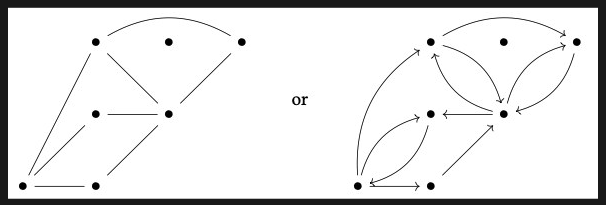

Nodes & Edges
Nodes, also known as vertices, are the main components of a graph. They represent individual entities within the graph. Edges are the connections or relationships between nodes. They depict the interactions or associations between the entities represented by the nodes. Together, nodes and edges form the building blocks of a graph, allowing for the representation and analysis of complex relationships and structures.
Directed & Undirected Graphs
In directed graphs, edges have a specified direction, representing one-way relationships between nodes. Undirected graphs lack directionality, with edges denoting bidirectional connections between nodes, suitable for representing symmetric relationships.
Within context of graphs
Abstraction in graph theory involves representing relationships as nodes and edges, simplifying real-world problems. This simplification aids in problem-solving and analysis by focusing on essential connections while disregarding irrelevant details.
For example, the Manchester tram lines can be abstracted into a graph by letting stops denote nodes on the graph whilst the edges be denoted by the real-world lines. Abstracting data such as geographical topology or landmarks help to simplify a graph like this to show only relevant data.